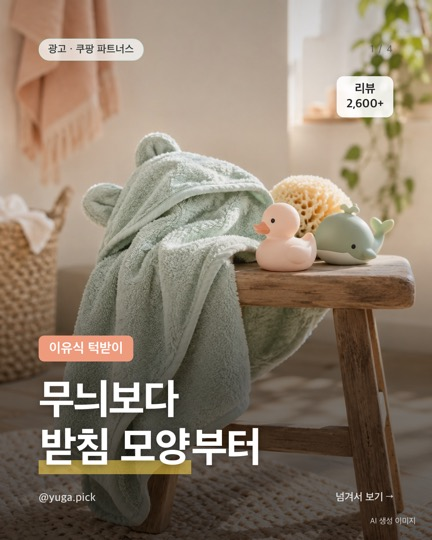
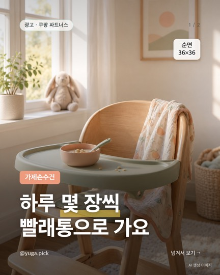
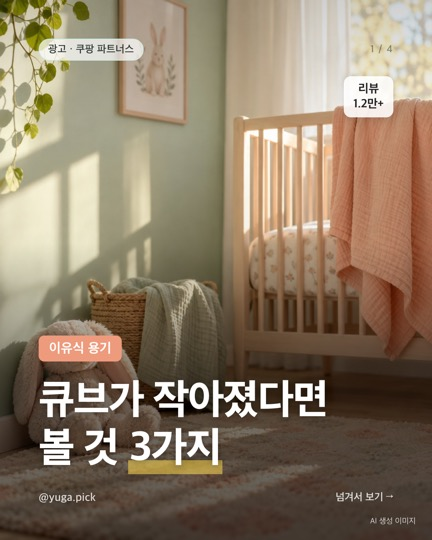
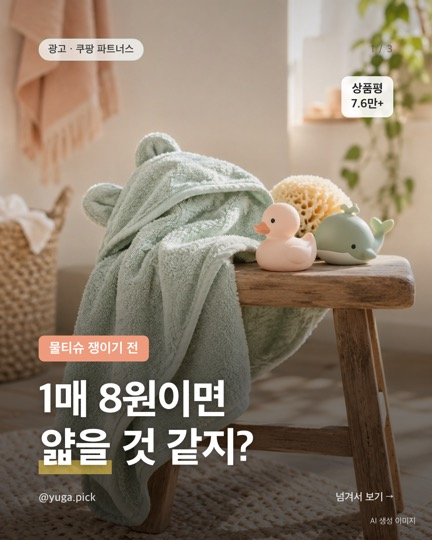
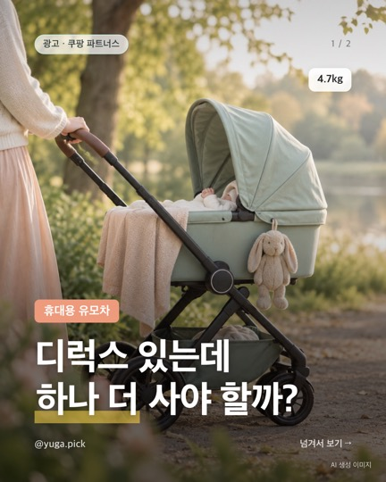
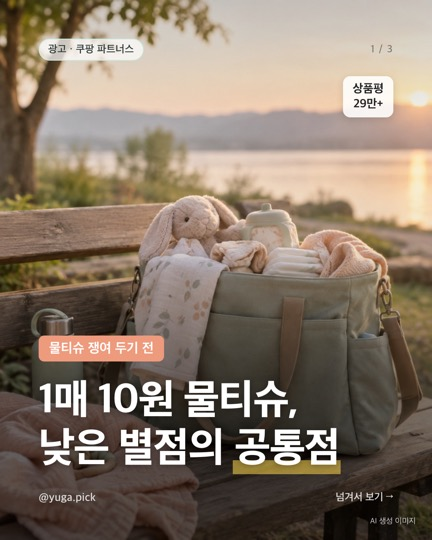
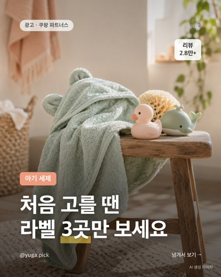
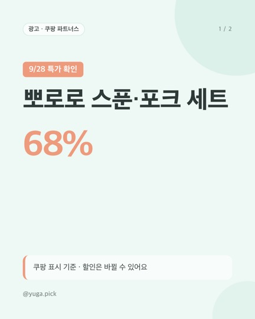
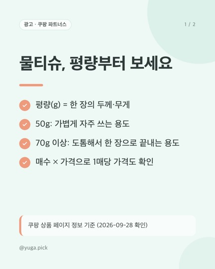
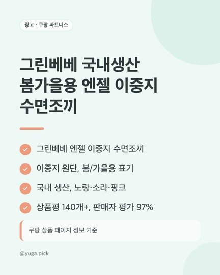

이 페이지는 쿠팡 파트너스 활동의 일환으로, 이에 따른 일정액의 수수료를 제공받습니다.
육아템 정리노트
@yuga.pick · 육아템 (0~5세 육아용품·소모품·놀이)
번호는 Instagram 글에 적힌 번호와 같아요. 가격·재고는 쿠팡에서 다시 확인해 주세요.

무늬보다 받침 모양부터
- 받침이 벌어지는지
- 숙여도 버티는지
- 물로 헹궈 끝나는지
- 옵션 타입 이름 확인
무쉬 실리콘 방수 턱받이 A타입 1개
쿠팡에서 가격·후기 보기 (광고)원문 글 보기
하루 몇 장씩 빨래통으로 가요
- 재질 순면 표기 · 36×36cm
- 10장 묶음
- 상품평 9,871개
- 판매자 배송비 따로 확인
오즈맘 유아동용 가제손수건 10p
쿠팡에서 가격·후기 보기 (광고)원문 글 보기
큐브가 작아졌다면 볼 것 3가지
- 실제 담기는 용량
- 데우기·냉동 표기
- 한 손에 드는 무게
락앤락 바로한끼 이유식 원형 보관용기 230ml 3개
쿠팡에서 가격·후기 보기 (광고)원문 글 보기
1매 8원이면 얇을 것 같지?
- 보통이에요 31
- 두꺼워요 13
- 얇아요 1
- '정말 촉촉해요' 29
베베앙 120 유아물티슈 캡형, 50g, 120매, 10개
쿠팡에서 가격·후기 보기 (광고)원문 글 보기
디럭스 있는데 하나 더 사야 할까?
- 중량 4.7kg · 최대 15kg
- 기내반입 가능 표기
- 상품평 310개 · 판매자 쿠팡(주)
- KC 인증 표기
조이로 JR2 휴대용 초경량 기내반입 접이식 유모차
쿠팡에서 가격·후기 보기 (광고)원문 글 보기
1매 10원 물티슈, 낮은 별점의 공통점
- 얇다·얇아졌다 13건
- 예전과 달라졌다 11건
- 건조하다 8건
- 55g · 100매 × 10팩
코멧 시그니처 아기물티슈 엠보싱 캡형 55g 100매 × 10팩
쿠팡에서 가격·후기 보기 (광고)원문 글 보기
처음 고를 땐 라벨 3곳만 보세요
- 제형·용도: 액상 / 섬유용
- 향: 유향 / 무향
- 100ml당 가격으로 비교
- 리필형은 본통 따로 필요
네이쳐러브메레 유아 오리지널 세제 리필형 허브가든향 1.3L, 2개
쿠팡에서 가격·후기 보기 (광고)원문 글 보기
뽀로로 스푼·포크 세트
- 구성: 스푼 + 포크 + 케이스
- 재질: 스테인리스 · 혼합색상
- 상품평 2,004개
- 크기·월령은 상세 설명에서 확인
릴팡 뽀로로잡스 입체 편한 어린이 스푼 + 포크 + 케이스 세트 PR5980
쿠팡에서 가격·후기 보기 (광고)원문 글 보기
물티슈, 평량부터 보세요
- 평량(g) = 한 장의 두께·무게
- 50g: 가볍게 자주 쓰는 용도
- 70g 이상: 도톰해서 한 장으로 끝내는 용도
- 매수 × 가격으로 1매당 가격도 확인
베베숲 오리진 유아물티슈 캡형 50g 100매 10개
쿠팡에서 가격·후기 보기 (광고)원문 글 보기
그린베베 국내생산 봄가을용 엔젤 이중지 수면조끼
- 새벽마다 이불 걷어찬 아기 다시 덮어주느라 깨는 시기, 있죠.
- 그래서 이불 대신 '입히는 이불', 수면조끼를 찾는 분이 많아요.
- 봄가을용으로 하나 정리해 둘게요.
- · 그린베베 엔젤 이중지 수면조끼
그린베베 국내생산 봄가을용 엔젤 이중지 수면조끼
쿠팡에서 가격·후기 보기 (광고)원문 글 보기